合成测试数据。默认明暗关键场景已抽查；其余主题供检查。
about-window-menu-darkabout-window-menu-lightquick-Adventure Timequick-Adventurequick-Alduinquick-Asciinemaquick-Aurora Lightquick-Ayu Darkquick-Ayu Lightquick-Catppuccin Frappequick-Catppuccin Lattequick-Catppuccin Macchiatoquick-Catppuccin Mochaquick-darkquick-Everforest Darkquick-Everforest Lightquick-Fahrenheitquick-first-openquick-Flexoki Darkquick-Flexoki Lightquick-Gruvbox Darkquick-Gruvbox Lightquick-Harperquick-Hybrid Darkquick-Hybrid Lightquick-Jellybeansquick-Kibblequick-lightquick-macOS Classic Darkquick-macOS Classic Lightquick-Mellifluous Darkquick-Mellifluous Lightquick-menu-darkquick-menu-lightquick-Molokai Darkquick-Molokai Lightquick-Solarized Darkquick-Solarized Lightquick-Spaceduckquick-Tokyo Moonquick-Tokyo Nightquick-Tokyo Stormquick-Twilightsettings-general-switches-darksettings-general-switches-lightsettings-window-menu-darksettings-window-menu-lighttray-menu-Adventure Timetray-menu-Adventuretray-menu-Alduintray-menu-Asciinematray-menu-Aurora Lighttray-menu-Ayu Darktray-menu-Ayu Lighttray-menu-Catppuccin Frappetray-menu-Catppuccin Lattetray-menu-Catppuccin Macchiatotray-menu-Catppuccin Mochatray-menu-darktray-menu-Everforest Darktray-menu-Everforest Lighttray-menu-Fahrenheittray-menu-Flexoki Darktray-menu-Flexoki Lighttray-menu-Gruvbox Darktray-menu-Gruvbox Lighttray-menu-Harpertray-menu-Hybrid Darktray-menu-Hybrid Lighttray-menu-Jellybeanstray-menu-Kibbletray-menu-lighttray-menu-macOS Classic Darktray-menu-macOS Classic Lighttray-menu-Mellifluous Darktray-menu-Mellifluous Lighttray-menu-Molokai Darktray-menu-Molokai Lighttray-menu-paused-darktray-menu-paused-lighttray-menu-Solarized Darktray-menu-Solarized Lighttray-menu-Spaceducktray-menu-Tokyo Moontray-menu-Tokyo Nighttray-menu-Tokyo Stormtray-menu-Twilightwindow-menu-darkwindow-menu-light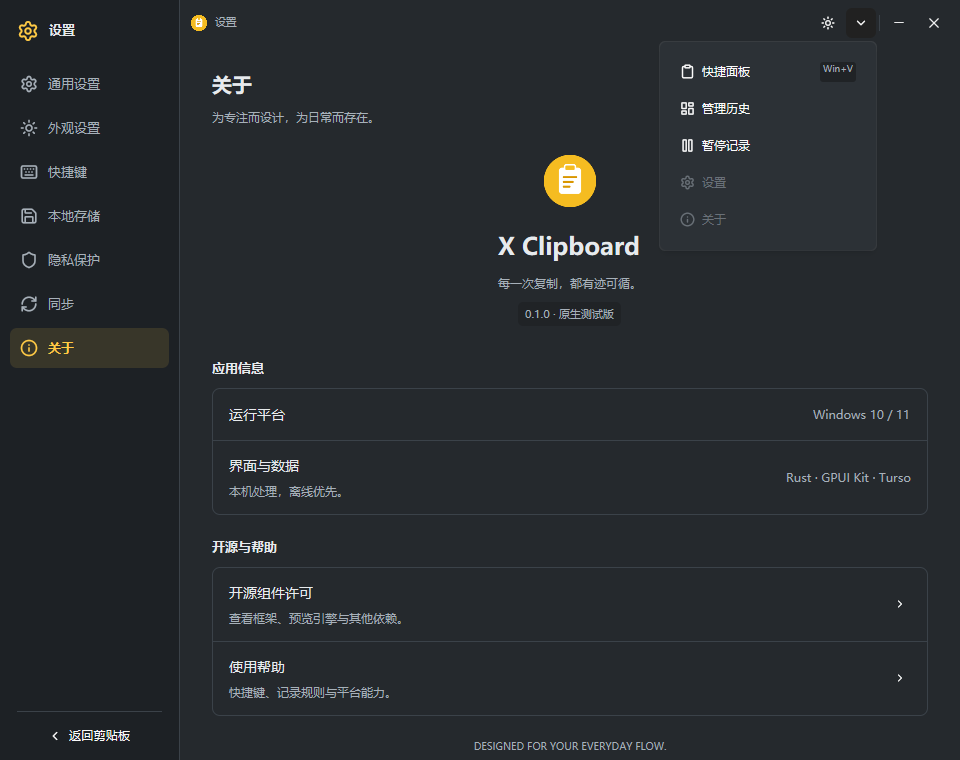

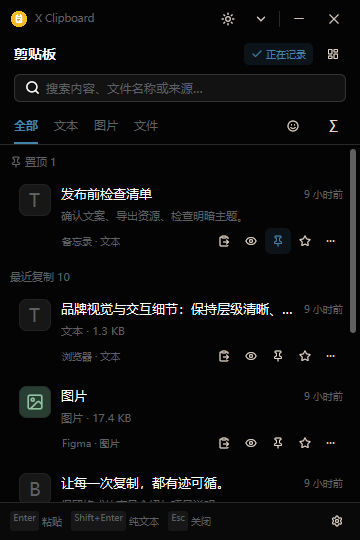
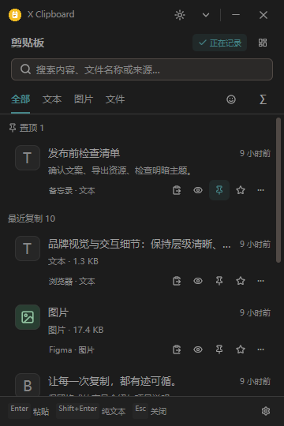
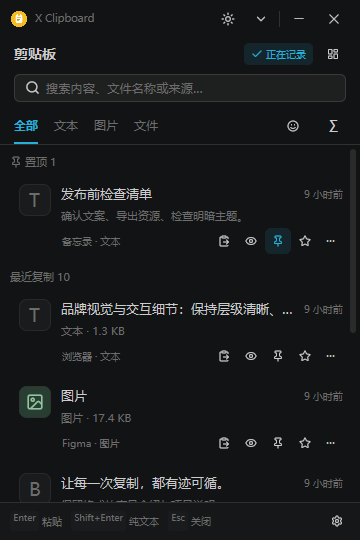


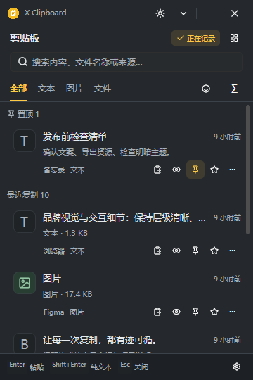


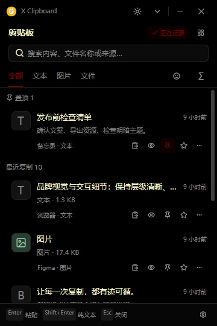


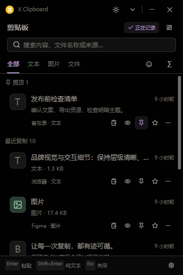


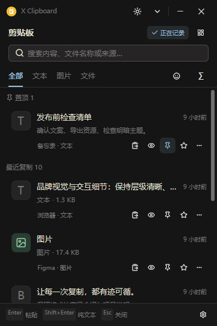
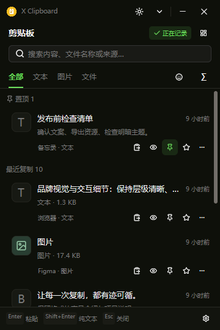


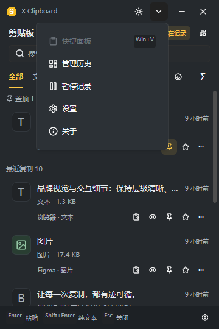
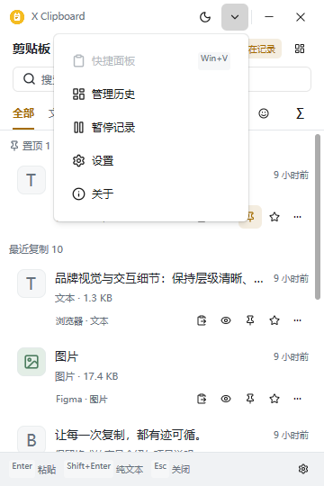


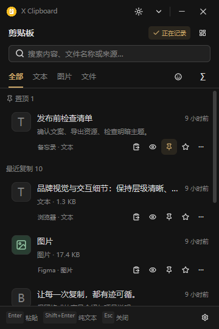
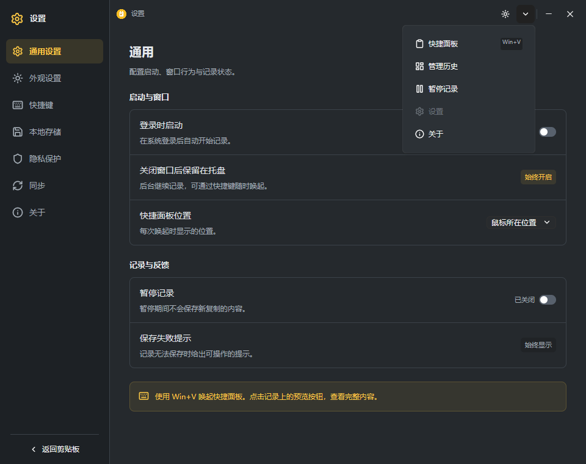

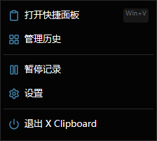
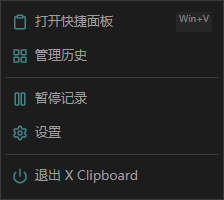
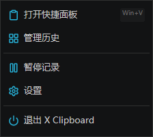


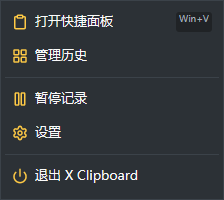


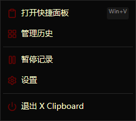


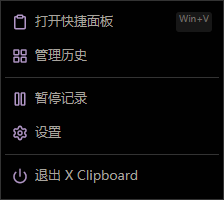


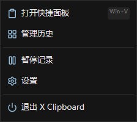
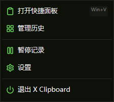
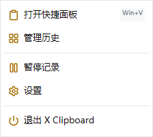


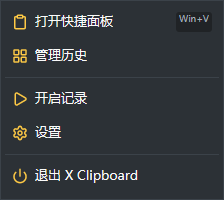
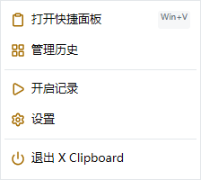


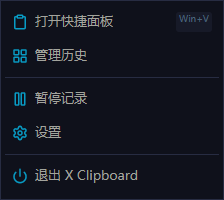


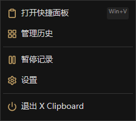